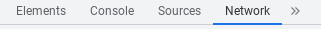
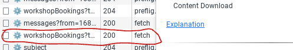
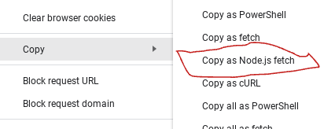

1. Öppna ditt schema på porten.
2. Tryck CTRL + Shift + i för att öppna inspekt.
3. Tryck på nätverk
4. Gå till en annan flik sen till porten igen.
5. Högerklicka på WorkshopBookings 200
6. Kopiera som Node.js fetch
7. Klistra in det på hemsidan